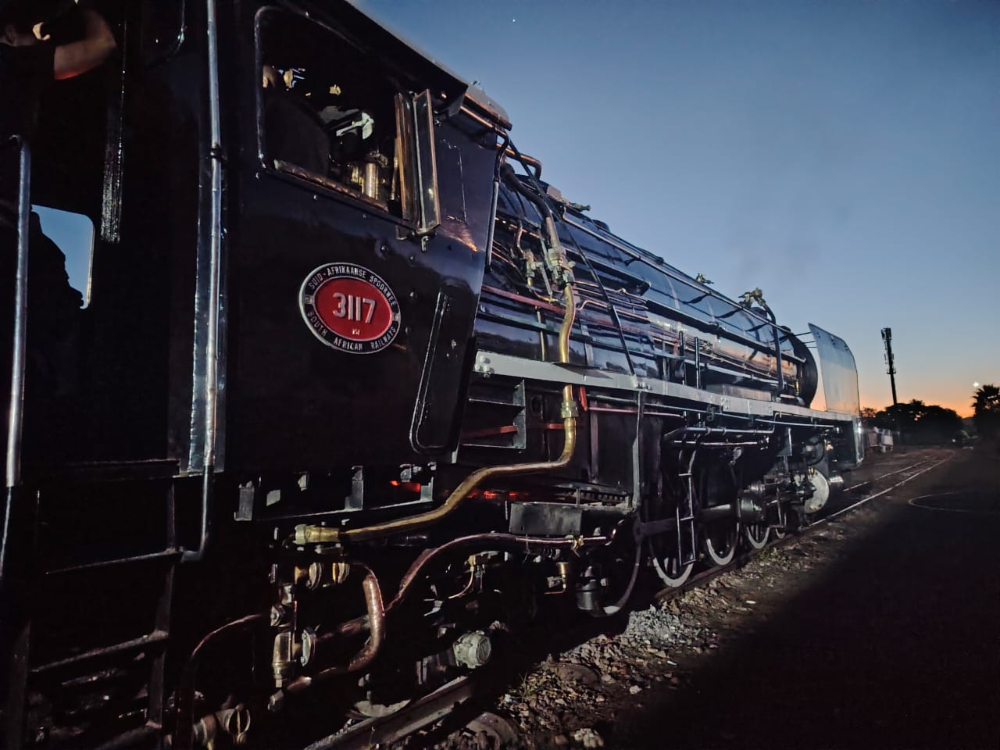
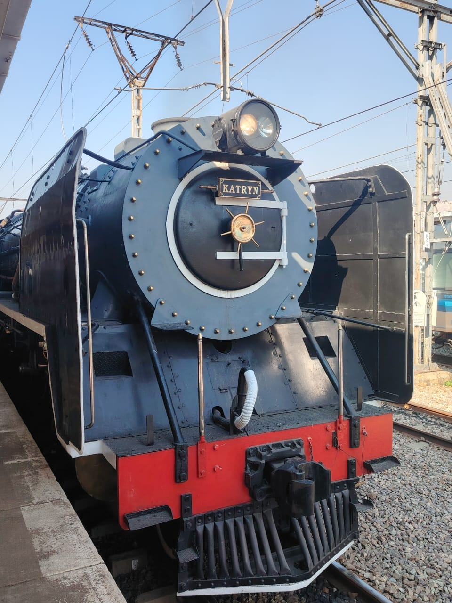
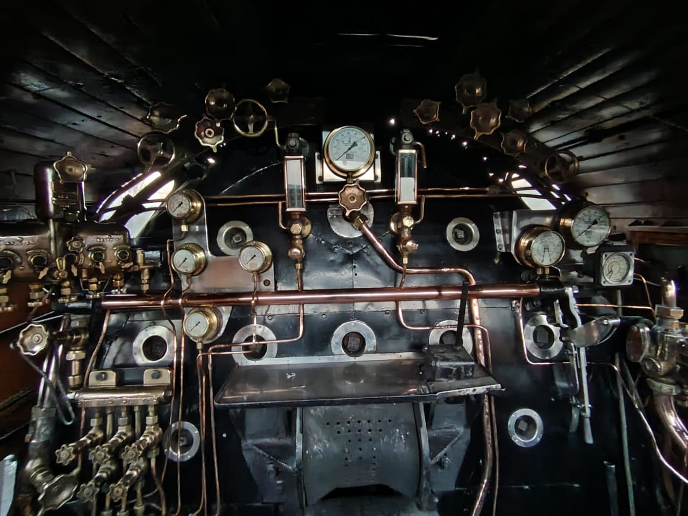
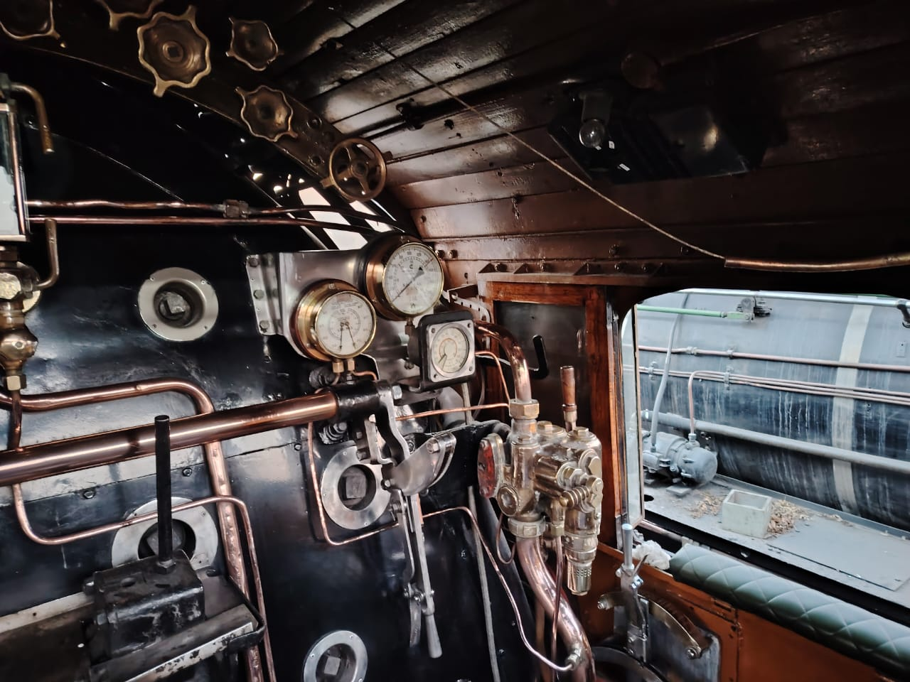

Welcome Aboard
This is a basic information pamphlet. If you have a question which is not answered in this pamphlet, please feel free to ask your coach controller.

Steam Locomotive Class
Tap for more information

Locomotive Class History
Tap for more information

Locomotive statistics
Tap for more information